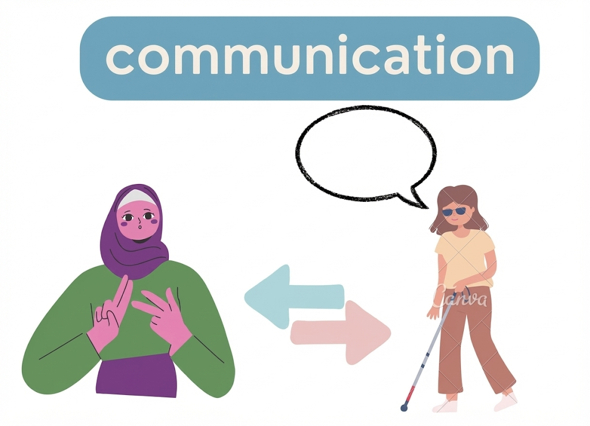
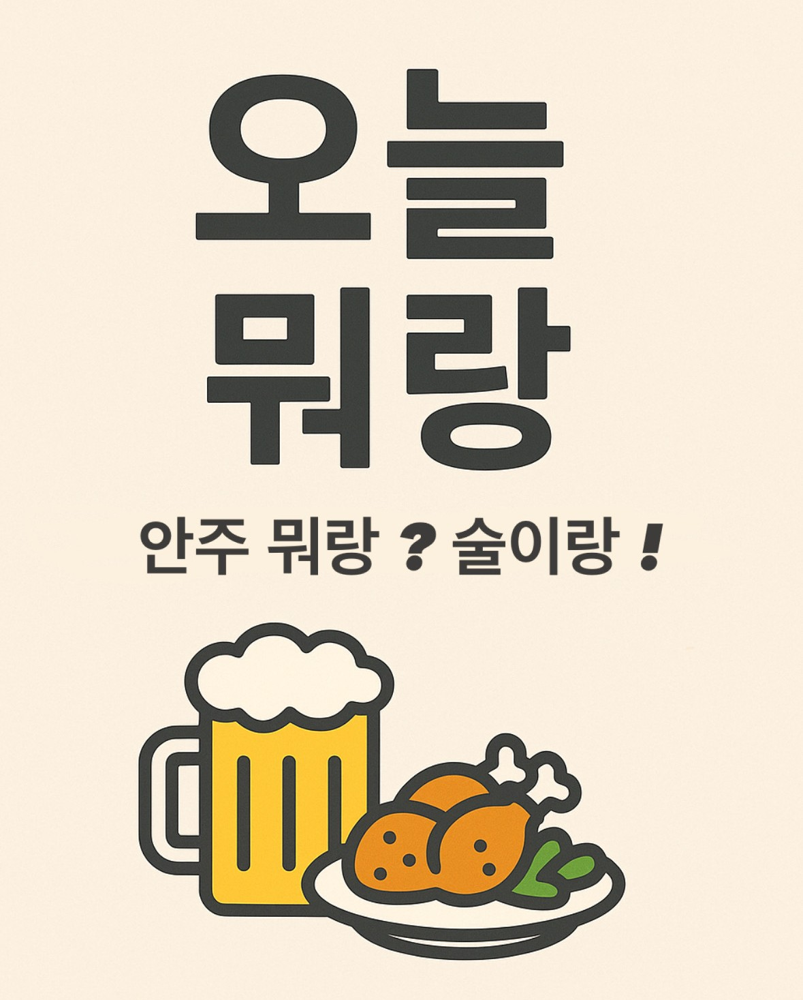

안녕하세요! 백엔드 개발자
이현수입니다
창의적인 아이디어를 혁신적인 디지털 솔루션으로 구현하는 풀스택 개발자입니다.
사용자 경험을 최우선으로 생각하며, 안정적인 서버 구축에 관심이 많습니다.

About Me
개발 경험을 바탕으로 사용자 중심의 웹 애플리케이션을 만들고 있습니다.
Core Backend
Java, Spring Boot를 활용한 견고한 REST API 설계 및 대용량 트래픽 처리를 고려한 서버 아키텍처 구축
Data & Performance
JPA(Hibernate), QueryDSL을 이용한 효율적인 ORM 사용 및 MySQL, Redis 쿼리 튜닝과 캐싱 전략 수립
Infra & DevOps
AWS, Docker를 활용한 클라우드 환경 구축 및 GitHub Actions, Jenkins를 통한 CI/CD 파이프라인 자동화
기술 스택
다양한 기술을 활용하여 최적의 솔루션을 제공합니다
Java
JavaScript (ES6+)
HTML / CSS
Spring Boot
Spring MVC
JPA / Hibernate
Node.js
MySQL / MariaDB
MongoDB
Docker
AWS (EC2, RDS)
Git / GitHub
메인 프로젝트
최근 진행한 프로젝트들을 소개합니다




함께 프로젝트를 시작해보세요
새로운 아이디어나 협업 기회에 대해 언제든 연락주세요